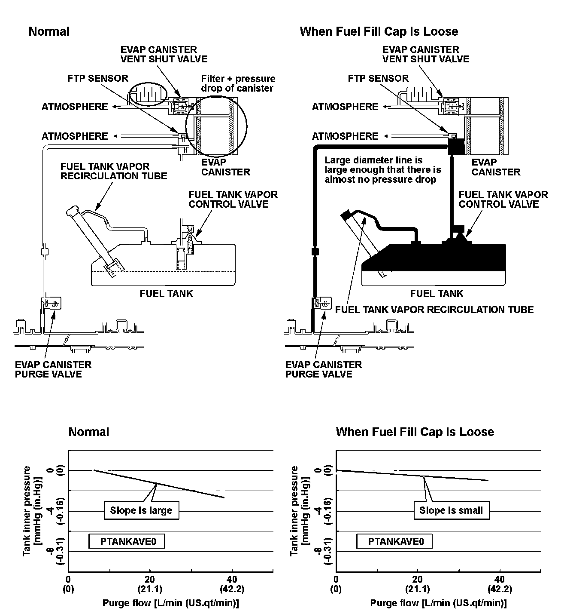
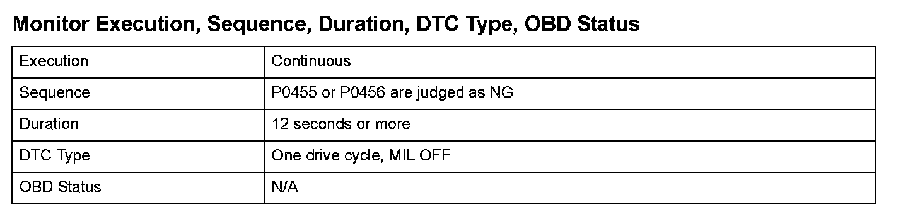
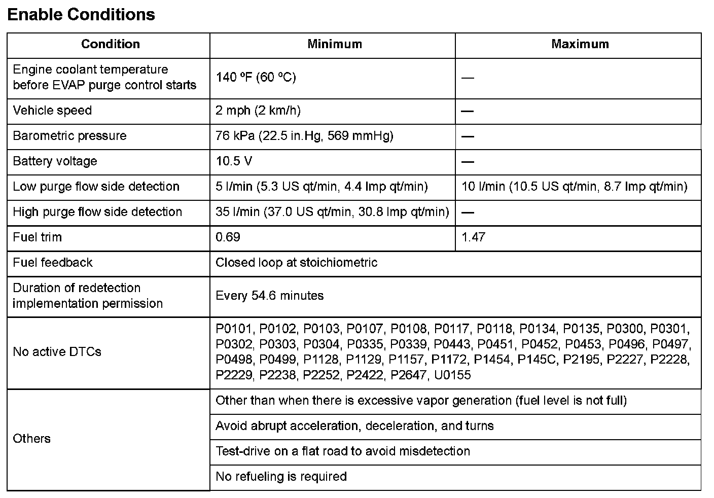

Advanced Diagnostics
DTC P0457: Evaporative Emission (EVAP) System Leak Detected/Fuel Fill Cap Loose or Missing (Engine Type: K20Z3)
General Description
When the fuel fill cap is installed properly, the purge flow occurs due to the airflow resistance of the canister, and tank pressure will be reduced.
When the fuel fill cap is loosened, the fuel tank pressure will not decrease even when the airflow resistance decreases and the purge flow occurs, because air is being exhausted from the tank to the atmosphere.
By examining the fuel tank pressure with less purge flow area and the fuel tank pressure with more purge flow area, and using the above characteristics, a loose fuel fill cap is detected.
The engine control module (ECM) calculates the relationship of the purge flow and fuel tank pressure (FTP) sensor, and when the slope of the decreasing fuel tank pressure to the purge flow increase is small, a loose fuel fill cap is detected.

Monitor Execution, Sequence, Duration, DTC Type, OBD Status

Enable Conditions
Malfunction Threshold
The output from the fuel cap monitor is 0.018 or more for at least 12 seconds (when there is no NG judgment history in this drive cycle).
Confirmation Procedure with the HDS
Do the EVAP FUNCTION TEST in the INSPECTION MENU with the HDS.
Driving Pattern
1. Start the engine. Hold the engine speed at 3,000 rpm without load (in neutral) until the radiator fan comes on.
2. Let the engine idle for at least 12 seconds.
3. Drive the vehicle immediately at a speed between 45 - 75 mph (72 - 120 km/h) for at least 12 minutes.
- Drive the vehicle in this manner only if the traffic regulations and ambient conditions allow.
Diagnosis Details
Conditions for illuminating the fuel fill cap caution
1. When a loose fuel fill cap is judged by this detection, the fuel fill cap caution is displayed. At this time, a DTC is not stored.
2. When the first drive cycle leak judgement (temporary DTC stored) is detected at a 0.02 inch leak or a 0.09 inch leak, the fuel fill cap caution is displayed when the ignition is turned on the next time.
Conditions for clearing the fuel fill cap caution
1. When the fuel fill cap caution is displayed by the first drive cycle leak judgement (temporary DTC stored) at a 0.02 inch leak or a 0.09 inch leak, the fuel fill cap caution goes out when the next failure occurs (second drive cycle) and P0457 is stored. (MIL illuminates)
2. When no leak is judged by a 0.02 inch leak or a 0.09 inch leak after the fuel fill cap caution is displayed, the fuel fill cap caution goes out when the ignition is turned on the next time. (P0457 is not stored at this time)
3. When driven three times without this failure detected and a 0.02 inch leak or a 0.09 inch leak detection is not done after the fuel fill cap caution is displayed, the fuel fill cap caution goes out. (P0457 is not stored at this time)
4. Use the Clear command of scan tool to erase the caution. The caution is erased when the MIL is illuminated.